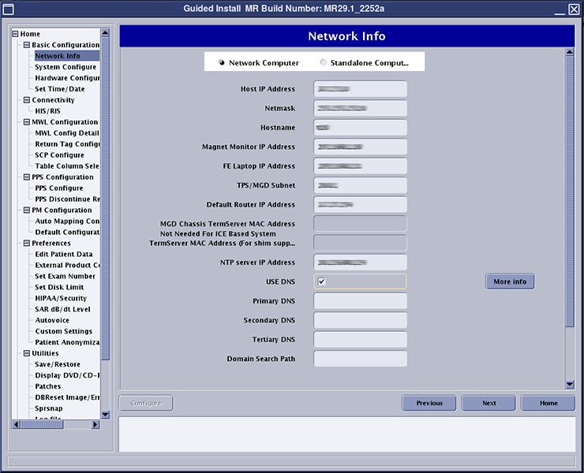
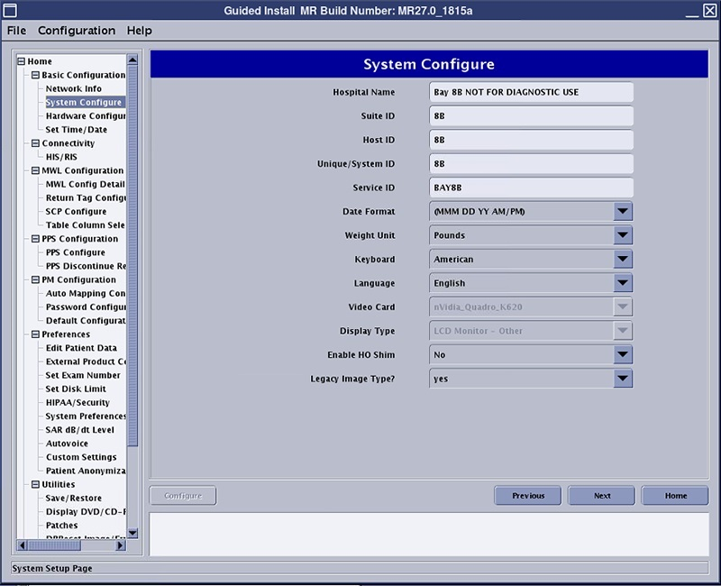

- 00000018WIA30570110GYZ
- id_20033079.175
- Sep 5, 2025 2:32:44 AM
System and hardware configuration
This topic describes the values and explanation of each parameter for system configuration and hardware configuration in Guided Install.
The MR System is configured for the various hardware interactions within the system using the Guided Install System Configure and Hardware Configure tabs.
Below are the examples of the System Configure and Hardware Configure tabs respectively (these are only examples and are subject to change based on software revision).
Network Info

| Parameter | Explanation | Value |
|---|---|---|
| Host IP Address | Main IP address used for interfacing with the web. | Site-entered |
| Netmask | Mask for network of devices in network. | Automatically entered |
| Hostname | Displayed name of the device seen by other connected devices. | Site-entered, consult with customer on what the scanner is named |
| Magnet Monitor IP Address | Address for magnet monitor. | Site-entered from monitor |
| FE Laptop IP Address | Address for service laptop. | Entered from computer |
| TPS/MGD Subnet | Address for TPS or MGD, address internal to local network. | To set to correct value, type 0.0.0. A window will show, with suggestions of the valid choices for addresses Note For software version 30.0 and later, the IP address should be in the format 0.0 (for example, 10.0). |
| Default Router IP Address | IP address for the router used in the system to interface with the internet. | Taken from router |
| NTP Server IP Address | Server address for NTP. | Site-entered |
| USE DNS* | Selecting the USE DNS check box enables the DNS configuration fields. | Select the check box if the site requires DNS configuration |
| Primary DNS* | IP address for the site’s first DNS server. | Site-entered |
| Secondary DNS* | IP address for the site’s second DNS server. | Site-entered |
| Tertiary DNS | - | Leave this field blank |
| Domain Search Path | Domain search name for the site’s DNS servers. | Site-entered |
| *Changes made to DNS settings may affect Image Protocol Manager (IPM) connectivity. See Determining if an MR scanner is connected to Imaging Protocol Manager (IPM). If IPM is configured but not connected, see Reenrolling an MR scanner in Imaging Protocol Manager (IPM). | ||
System Configure

The following table provides guidance to fill out the various system configuration parameters.
| Parameter | Explanation | Value |
|---|---|---|
| Hospital Name | Enter the name of the hospital or site that will appear at the top of filmed images. | Site-entered |
| Suite ID | Enter the name of the suite to which the scanner will be connected. If the system is connected to a suite of systems, the name may need to be acquired from the site's system administrator. If the system is stand-alone (not connected to a suite or hospital network), the name is at the option of the installer. | Site-entered |
| Host ID | Enter the name of the system host. If the system is connected to the site's network, the name may need to be acquired from the site's system administrator. If the system is a stand-alone (not connected to a suite or hospital network), the name is at the option of the installer. | Site-entered |
| Unique/System ID | This is the GE CARES Unique system ID. This information is generated through the GEMS local area service manager. A dummy ID can be entered if the correct ID is unknown to speed up installation. The installer can go back and update this field with the correct code later when the correct information is known. An example of a dummy ID could be 123. | Site-entered |
| Service ID | This is the GE CARES System ID. This information is generated through the GEMS local area service manager. A dummy ID can be entered if the correct ID is unknown to speed up installation. The installer can go back and update this field with the correct code later when the correct information is known. An example of a dummy ID could be 123. However it should be noted that the entire GE back office connectivity suite, including Remote Software Download (RSD), is highly dependent on this entry being accurate. | Site-entered |
| Date Format | This is the date structure to be used/displayed by the system. A choice of one of six options are available. Each with date format and standard time (AM/PM) or military time (24 hour clock). Japanese ERA time format is also provided. | (MMM DD YY AM/PM) [(MMM DD YY AM/PM), (DD MMM YY AM/PM), (YY MMM DD AM/PM), (MMM DD YY 0-23), (DD MMM YY 0-23), (YY MMM DD 0-23)] |
| Weight Unit | Select the unit of measurement desired by the site's staff: kilograms or pounds. | Pounds (Pounds, Kilograms) |
| Keyboard | Choose the keyboard language that will be used for this system. | American (American, French, German, Italian, Portuguese, Spanish, Swedish, Danish, Dutch, Norwegian, Finnish) |
| Language | Choose the language that will be used where the system is being installed. | English (English, French, German, Italian, Portuguese, Spanish, Japanese, Chinese, Danish, Dutch, Norwegian, Finnish, Swedish) |
| Video Card | Video card value is selected automatically. | N/A |
| Display Type | LCD Monitor - Other is selected as default. | LCD Monitor - Other |
| Enable HO Shim | (For software version DV27 and earlier) Select whether the system has high order shim. | No (Yes, No) |
| Legacy Image Type | Legacy Image Type: Select the legacy image type for the system being installed: Yes, No. | Yes (Yes, No) |
Hardware Configure
The following table provides guidance to fill out the various hardware configuration parameters.
The Guided Install Product Based Selection feature lets you select the product that you are installing during the Load From Cold procedure. The fields in the Guided Install hardware tab are automatically populated based on the product that you select.
| Parameter | Explanation | Value |
|---|---|---|
| Product GTIN (For software version 30.1 and later) | Select the Global Trade Item Number (GTIN) for the system. See Product Global Trade Item Number (GTIN) information. | Valid GTIN |
| GTIN Region (For software version 30.1 and later) | Select the region of the system installation site. If the list does not contain the region of the system installation site, select GLOBAL. Note The selected region must match the region identifier in the selected product GTIN. |
China Global Russia |
| Product Name (For software version 30.1 and later) | Select the product name for the product being installed. |
1.5T, 70 cm, Optima™ MR450w |
| Field Strength | - | 1.5T |
| Package Name | Gradient drivercoil package name. |
XGD |
| Gradient Type | Gradient driver type. |
8920(XGD) |
| Resonance Module | Gradient coil type. |
XRMW |
| Magnet Serial Number | Enter the magnet serial number for the installed system. The serial number can be found on the rating plate on the magnet. |
HM |
| Magnet Ramp Direction | - | Forward |
| Table Limit | Auto-populated field. This number represents the total travel distance allowed for the table. |
27005 (Used in Artist T) 25431 |
| Scan Range (micro - meter) |
Long is the default value. Select Short if there is not enough room for the cable overhang between the rear pedestal and the customer wall. For DV25.0 and earlier, this parameter is seen in the System Configure tab. |
long Short |
| Line Frequency | Select the incoming power line frequency under which the installed site will operate. Selections are:
|
60 Hz 50 Hz |
| RF Amp Type | Select the RF amplifier type installed in the system. |
1.5T 16KW XRFD 1.5T SRFD2 RF amp |
| Number of Tx Channels | Non-selectable field. | 1 |
| Governing Body | Select the governing body according to the Region rule. Selections are:
| iec (default), MHLW-JIS, fda2 |
| ISO Vector Z | Enclosure and IsoZ value. |
1.5T 70cm Magnet Enclosure |
| Magnet Enclosure | - |
DV Enclosure |
| PAC Type | Select the PAC Type according to the wired PAC or Physiological Acquisition Wireless Station (PAWS) installed. selections are:
|
PAC2B/PAC5 Wireless PAC |
| Wireless PAC Frequency Channel (For software version 30 and later) |
Non-selectable field; reserved for future use. | None |
| RFSystems Cabinet (RFS) | Yes is the default value. | Yes |
| Spectro RF Amp Type |
None is the default value. For a site that has an MNS option, select a valid MNS option. | None |
| Scanner Channel Configuration |
Select the channel configuration as applicable. Note Some channel configurations may require option keys.
|
16 32 (Only used in Artist T) |
| Shim Supply Type |
None is the default value. Select NAV Shim Supply/ RRI Shim Supply if have | None |
| LPCA / Port Configuration | - |
2 P-Pprt on LPCA |
| Cooling Cabinet Type |
Check the part number of the HEC at the site and configure. To identify the HEC type. |
None G6001EN G6000EN |
| UPM Type | - |
UPM 100KHz Sampling rate QUPM 1MHz sampling rate |
| Table Configuration | - |
None |
| Number of Tables | Non-selectable field. | 1 |
| Cabinet Monitor Type | Non- selectable field.This field is introduced with 29 software. |
Cabinet Monitor 0 |
| DPP MEMS Support |
Non- selectable field. |
None |
| SSC Type | - | ICE |
| Receiver Type | - | RRX |
| Grad Processor type | - |
None |
| Table Encoder Calibration Value | - |
0 |
| Table Encoder Calibration Value 2 | Non- selectable field. | 0 |
| Altitude in Meters |
Non- selectable field. |
0 |
| Bridge Type (For software version 30 and later) | - | None (disabled) |
| System Cabinet (For software version 30 and later) | - |
None (disabled) |
| IRD Type (For software version 30 and later) | Trackball IRD (disabled) (For software version prior to 30.1_R04) 12” IRD (For systems with software version 30.1_R04 and later with legacy 12” IRD with Trackball) | Trackball IRD (disabled) 12” IRD (For systems with software version 30.1_R04 and later with legacy 12” IRD with Trackball) |
| Use T/R Head Coil For Calibrations (For software version 30.2 and later) | - |
Yes (disabled) |
| Fiber Optic CAN Assembly (For software version 30.1 and later) | If this field is enabled, look in the Penetration (PEN) cabinet for CAN fiber board (CFB) 5167035. If the CFB is present, select Yes. Otherwise, select No. |
Yes No |